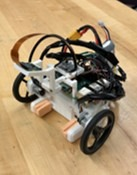
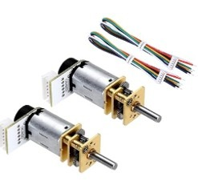
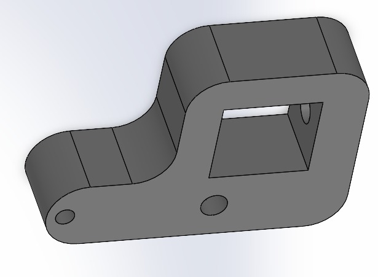
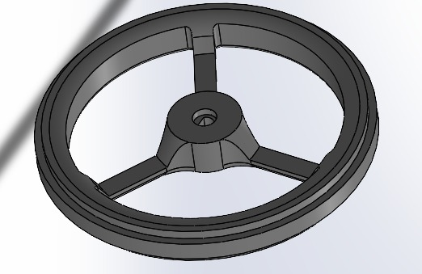
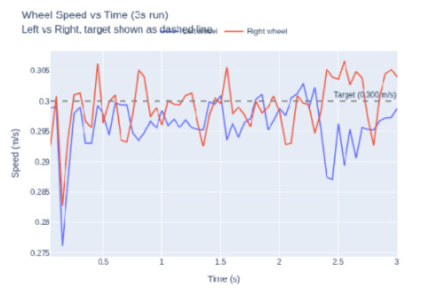
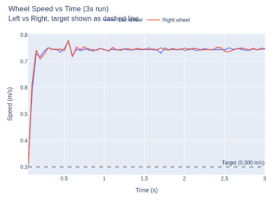
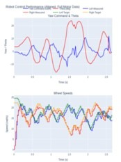

Controller tuning



Watch it run
▶ Project video
Line following, zone detection and gripper control in action.
What
An autonomous robot that follows a line, finds a target and moves it to a safe zone with a gripper. Limits: 0.22 × 0.22 × 0.25 m and a $300 budget. Scored on speed, weight, and successful runs out of 3.
How
- Sized and selected the drive motors
- C++ motor firmware: PWM, encoder feedback, closed-loop speed control
- Vision, control and motor loops on separate threads
- Swapped an unreliable IMU for encoder-based odometry
- Python logging tool to tune 40+ parameters
- Drive-system parts in SolidWorks
Lessons
- Start firmware early
- Simple beats complex: encoders beat the IMU
- Real dynamics need empirical tuning
- Most bugs came from hardware × firmware interactions